BarShift Pro
Työvuorojen hallintajärjestelmä baarien henkilökunnalle. Tästä oppaasta löydät ohjeet kaikkiin toimintoihin — niin työntekijälle kuin adminillekin, kuvakaappauksin.
Ohjeen kuvat on otettu demobaarin esimerkkidatasta. Klikkaa kuvaa nähdäksesi sen suurempana.
Kirjautuminen
Kirjaudu sisään käyttäjätunnuksella muodossa tunnus@baarinnimi. Baarin nimi on se tunniste, jonka admin on teille antanut.
mikko@demobaari tai sari@demobaari
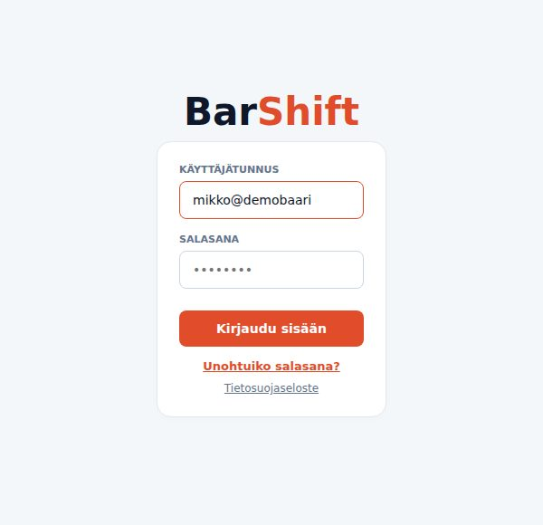
- Kirjautuminen pysyy voimassa, kunnes kirjaudut ulos (ylärivin uloskirjautumispainike).
- Väärillä tunnuksilla kirjautuminen on rajoitettu: usean virheyrityksen jälkeen kirjautuminen estetään hetkeksi.
- Salasanan on oltava vähintään 8 merkkiä.
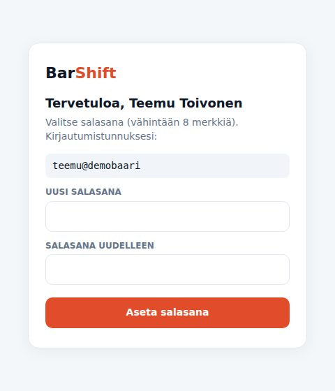
| Rooli | Mitä voi tehdä |
|---|---|
| Työntekijä | Näkee omat ja avoimet vuorot, ottaa avoimia vuoroja, tarjoaa vuoroja vaihtoon, ilmoittaa poissaoloja, seuraa omaa vuosilomaansa, viestittelee työkavereiden kanssa |
| Admin | Kaikki yllä mainittu + suunnittelee vuorot, hyväksyy poissaolot, hallitsee työntekijöitä, rutiineja ja ilmoituksia sekä julkaisee baarin tapahtumat julkiseen kalenteriin |
Käyttöliittymän rakenne
Osiot löytyvät vasemmasta valikosta (tietokoneella) tai alareunan palkista (puhelimella). Sivun yläreunassa ovat aina näkyvillä neljä pikakuvaketta:
| Kuvake | Toiminto |
|---|---|
| Ohjeet | Avaa tämän ohjeen uuteen välilehteen |
| Profiili | Omat tiedot, salasana, ilmoitukset, vuosiloma ja leimatut tunnit |
| Teema | Vaihtaa vaalean ja tumman teeman välillä |
| Kirjaudu ulos | Päättää istunnon |
| Osio | Kuvaus |
|---|---|
| Koti | Ilmoitukset, leimaus, huomioitavat asiat sekä rutiinit, puutelista ja vuorokirja |
| Kalenteri | Viikkokalenteri vuoroista ja tapahtumista |
| Vuorot | Viikkonäkymä ja lista vuoroista |
| Tapahtumat | Baarin tapahtumat |
| Viestit | Yksityisviestit työkavereille |
| Tilastot | Työtunnit ja niiden vahvistus; oikeuksien mukaan myynti, tilitykset, raportti ja palkka-ajo, tuntien hyväksyntä ja työaikapankki |
| Poissaolot | Sairasloma-, loma- ja muut poissaolot |
| Hallinta | Työntekijät, ilmoitukset, rutiinit, kassa, osaaminen, miehitys, varaukset, vieraskortisto, baarin asetukset (välilehdillä), oikeudet, järjestelmän tila, julkinen profiili ja työvoimapyynnöt. Ylläpitäjä näkee kaiken; muille näkyvät vain heidän oikeuksiinsa kuuluvat välilehdet |
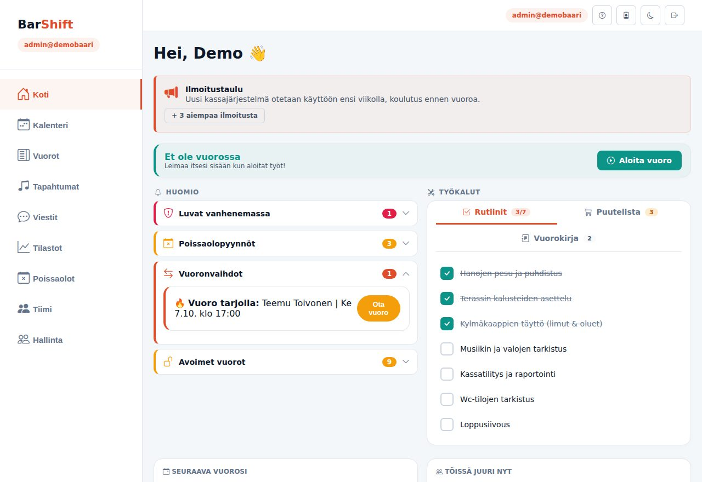
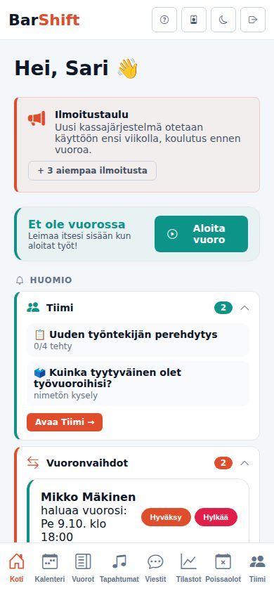
Etusivu Uusi
- Ilmoitustaulu: uusin ilmoitus näkyy aina. Aiemmat aukeavat painikkeesta "+ N aiempaa ilmoitusta".
- Vuoron leimaus: paina Aloita vuoro kun tulet töihin ja Lopeta vuoro kun lähdet. Leimatut tunnit näkyvät profiilissa ja tilastoissa.
- Huomio: kaikki huomiota vaativat asiat tiiviinä ryhminä (ks. alla).
- Työkalut: Rutiinit, Puutelista ja Vuorokirja välilehtinä heti näkyvillä.
- Seuraava vuorosi, Töissä juuri nyt ja Palkka-arvio (kuukauden tunnit ja tavoite) sivun alaosassa.
Jokaisella ryhmällä on väri ja lukumäärä. Avaa ryhmä napsauttamalla otsikkoa – valinta muistetaan.
| Ryhmä | Mitä siellä on |
|---|---|
| Luvat vanhenemassa | JV-kortit, jotka vanhenevat 60 päivän sisällä (vain admin) |
| Poissaolopyynnöt | Käsittelyä odottavat poissaolot; "Käsittele pyynnöt" vie Poissaolot-sivulle (vain admin) |
| Vuoronvaihdot | Kollegan tarjoama vuoro (Ota vuoro) tai pyyntö sinun vuorostasi (Hyväksy / Hylkää) |
| Työvoimapyynnöt | Toisen baarin työvoimapyyntö, jonka admin hyväksyy tai hylkää |
| Avoimet vuorot | Kolme seuraavaa avointa vuoroa "Ota vuoro" -painikkeella; "Näytä kaikki" avaa Vuorot-listan suodatettuna avoimiin |
| Vuoroja muissa baareissa | Yhteistyöbaarien avoimet vuorot yhteystietoineen |
- Rutiinit (esim. 3/7): päivän tehtävälista. Napauta tehtävää merkitäksesi sen tehdyksi – lista nollautuu joka päivä. Adminin muokattavissa Hallinta → Rutiinit.
- Puutelista: kirjoita mitä puuttuu (esim. "Sitruunoita") ja paina Enter. Kuka tahansa voi merkitä tuotteen ostetuksi; lisääjä ja admin voivat muokata tai poistaa rivin.
- Vuorokirja: terveisiä seuraavalle vuorolle. Näkyvissä ovat 3 viimeisintä päivää, "Näytä koko historia" avaa vanhemmat.
Kalenteri
- Kuluvan viikon työvuorot aikajanamuodossa kellonajan mukaan
- Oma vuoro, muiden vuorot ja tapahtumat erottuvat omilla väreillään
- Jos työntekijällä on hyväksytty poissaolo, vuoron lohko haalistuu ja näyttää ikonin (🤒 tai ✈️)
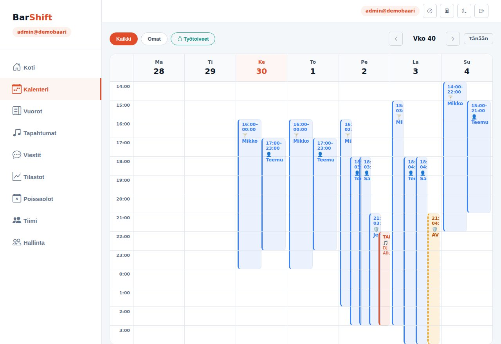
- Selaa viikkoja < ja > -nuolilla, palaa tähän päivään Tänään-painikkeella
- Suodata: Kaikki tai Omat vuorot
- Työtoiveet: kytke tila päälle ja napauta päiviä merkitäksesi, milloin voit työskennellä (vihreä) tai et (punainen). Napauta uudelleen vaihtaaksesi tai poistaaksesi merkinnän. Admin näkee toiveet vuorosuunnittelussa.
Työvuorot Päivitetty
- Taulukko: rivit ovat työntekijät (ylimpänä AVOIN VUORO -rivi) ja sarakkeet viikon päivät.
- Selaa viikkoja nuolilla tai palaa painikkeella Tämä viikko.
- Työntekijä näkee omat ja avoimet vuorot. Napauta avointa vuoroa ottaaksesi sen itsellesi.
- Vie vuorot puhelimen tai tietokoneen kalenteriin Vie kalenteriin -painikkeella.
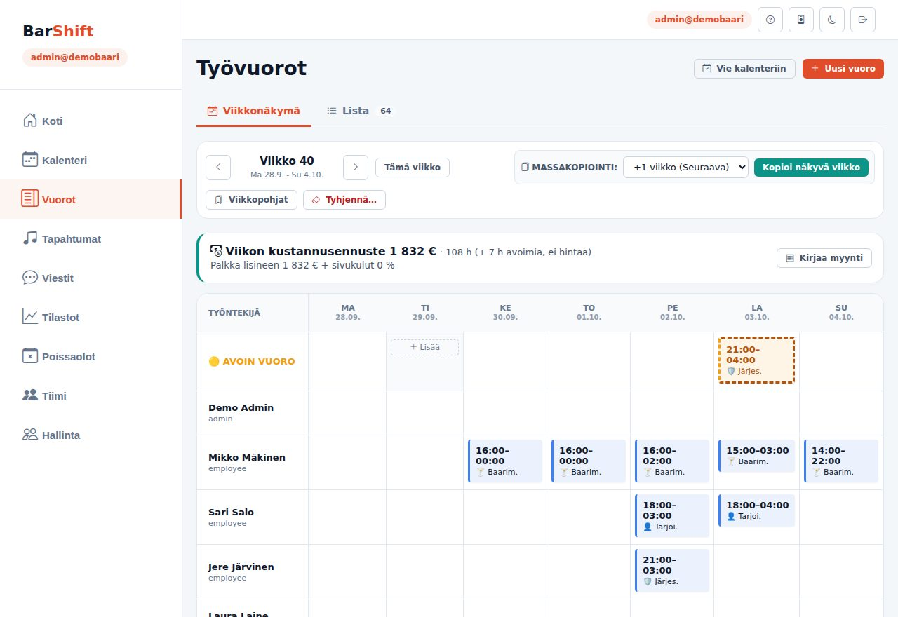
- Vuorot viikoittain ja päivittäin ryhmiteltyinä; Tänään ja Huomenna on merkitty.
- Kortissa: aika ja tunnit, työntekijä, rooli sekä merkinnät Oma Avoin vuoro Vaihdossa.
- Ajanjakso: Tulevat, Tämä kuukausi, Menneet, Kaikki tai Oma aikaväli.
- Näytä: Kaikki (työntekijällä "Omat ja avoimet"), Vain omat tai Avoimet. Adminilla lisäksi työntekijävalinta.
- Yhteenvedossa vuorojen, avointen vuorojen ja tuntien määrä.
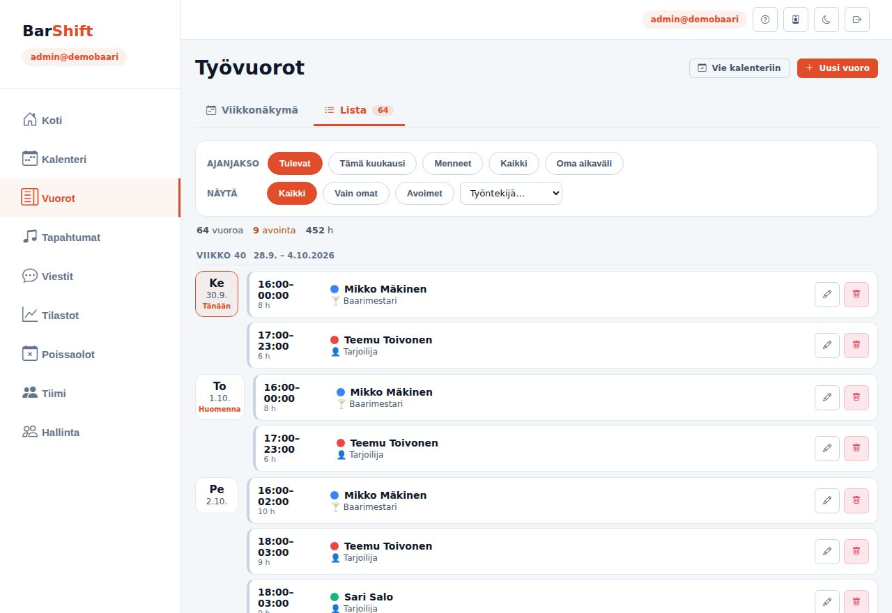
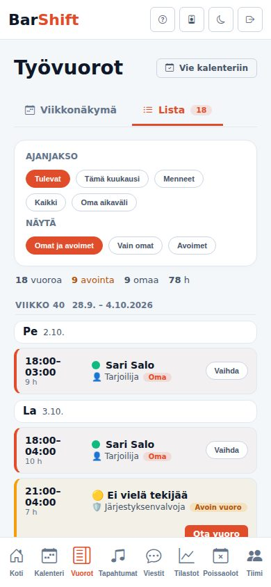
- Ota vuoro: avoimen vuoron kohdalla painike Ota vuoro (myös etusivun Huomio-ryhmässä).
- Vuoronvaihdon kohdistus: tarjotessasi vuoroa voit valita, saako sen kuka tahansa vai vain tietty työkaveri. Jos vaihdosta syntyisi ristiriita (päällekkäisyys, liian lyhyt lepo, poissaolo tai estepäivä), näet huomautuksen – se ei estä vaihtoa, ja työntekijä sekä admin päättävät itse.
- Klikkaa "Vaihda" oman vuorosi kohdalla tarjotaksesi sitä muille – kollegat näkevät tarjouksen etusivun Vuoronvaihdot-ryhmässä.
- Vaihto kahden kesken: kun pyydät työkaverin vuoroa, voit tarjota tilalle oman vuorosi. Hyväksyttäessä vuorot vaihtavat omistajaa ilman ylläpitäjän käsittelyä; ylläpito saa vain tiedon.
- Kun kollega haluaa vuorosi, saat ilmoituksen ja voit hyväksyä tai hylätä pyynnön. Hyväksynnän jälkeen vuoro siirtyy automaattisesti.
- Uusi vuoro: paina Uusi vuoro tai napauta tyhjää solua viikkonäkymässä. Valitse työntekijä (tai jätä avoimeksi), päivä, alku- ja loppuaika sekä rooli.
- Muokkaa vuoroa kynäkuvakkeesta ja poista roskakorista.
- Massakopiointi: viikkonäkymässä voit kopioida koko näkyvän viikon 1–4 viikon päähän.
- Viikkopohjat: viikkonäkymän Viikkopohjat-painikkeella tallennat näkyvän viikon kaikki vuorot (viikonpäivittäin, työntekijöineen) nimettynä pohjana ja syötät pohjan mihin tahansa viikkoon (valitse viikon mikä tahansa päivä). Syötön voi tehdä luonnoksina ja halutessa kaikki avoimiksi vuoroiksi. Jo olemassa olevia identtisiä vuoroja ei lisätä uudelleen, ja poistuneen työntekijän vuoro tulee avoimeksi.
- Tyhjennä…: poistaa vuorot päivältä, viikolta tai valitulta ajanjaksolta kerralla (rajattavissa yhteen työntekijään, vain avoimiin tai vain luonnoksiin). Ikkuna näyttää etukäteen, montako vuoroa poistuu; toiminto kirjataan auditlokiin eikä sitä voi perua.
- Roolit valitaan baarin omasta rooliluettelosta (Hallinta → Baari).
- Miehitys ja vuoroehdotukset: Hallinta → Miehitys -välilehdellä määrität, montako tekijää tarvitaan milloinkin. Kattavuus näyttää seuraavien 14 päivän puutteet, ja Ehdota vuorot puutteisiin tekee luonnosehdotuksen (huomioi saatavuuden, poissaolot, lepoajan, viikkotuntirajan ja tavoitetunnit). Voit valita, mitkä ehdotukset lisätään.
- Kustannusennuste: viikkonäkymän yläreunassa näkyy viikon suunniteltu henkilöstökulu, budjetin ylitys ja (jos kirjaat päivämyynnin) kulujen osuus myynnistä.
- Ristiriitavaroitukset: lomake varoittaa päällekkäisestä vuorosta, liian lyhyestä lepoajasta (oletus 11 h), viikkotuntirajan ylityksestä, hyväksytystä poissaolosta ja estetyksi merkitystä päivästä. Varoitus ei estä tallennusta, mutta pyytää vahvistuksen.
- Saatavuus: työntekijän nimen perässä näkyy ✓ vapaa tai ✗ estetty, kun hän on merkinnyt saatavuutensa kyseiselle päivälle.
- Vuoropohjat: paina Tallenna pohjaksi tallentaaksesi kellonajat ja roolin; uutta vuoroa luodessa napauta pohjaa täyttääksesi ne. Pohjan voi poistaa ×-painikkeesta.
- Viikoittainen toisto: uutta vuoroa luodessa voit luoda saman vuoron automaattisesti seuraaville viikoille.
- Luonnos ja julkaisu: rastita Luonnos, jolloin vuoro näkyy vain adminille (harmaana, merkintä "Luonnos"). Paina Julkaise luonnokset, kun lista on valmis: vuorot tulevat näkyviin ja työntekijät saavat ilmoituksen.
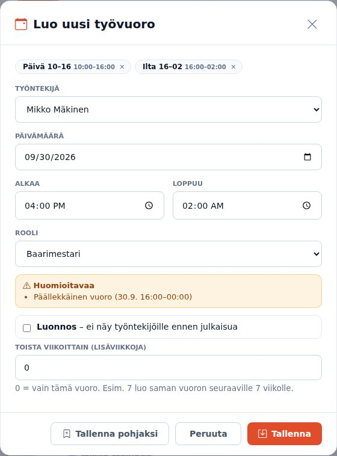
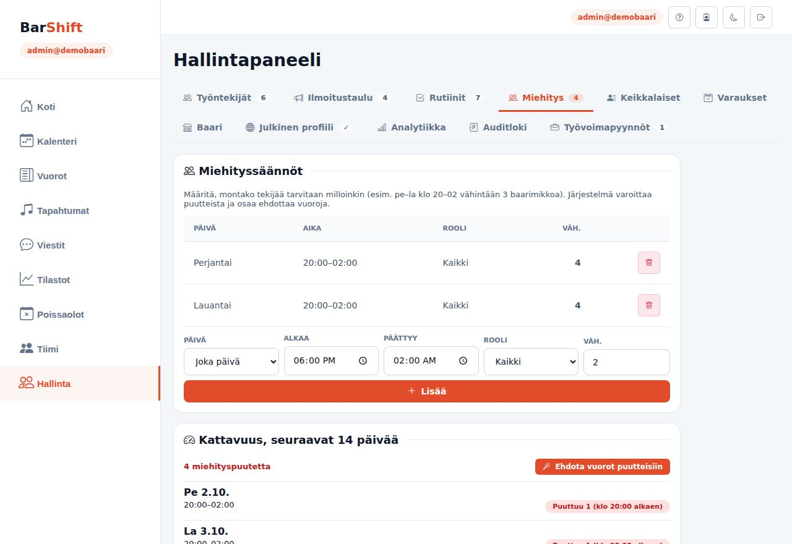
Tapahtumat Päivitetty
- Näyttää baarin tulevat tapahtumat päivämäärällä, kellonajalla ja nimellä.
- Tapahtumat näkyvät myös Kalenteri-näkymässä, jotta henkilökunta osaa varautua erityisiin iltoihin.
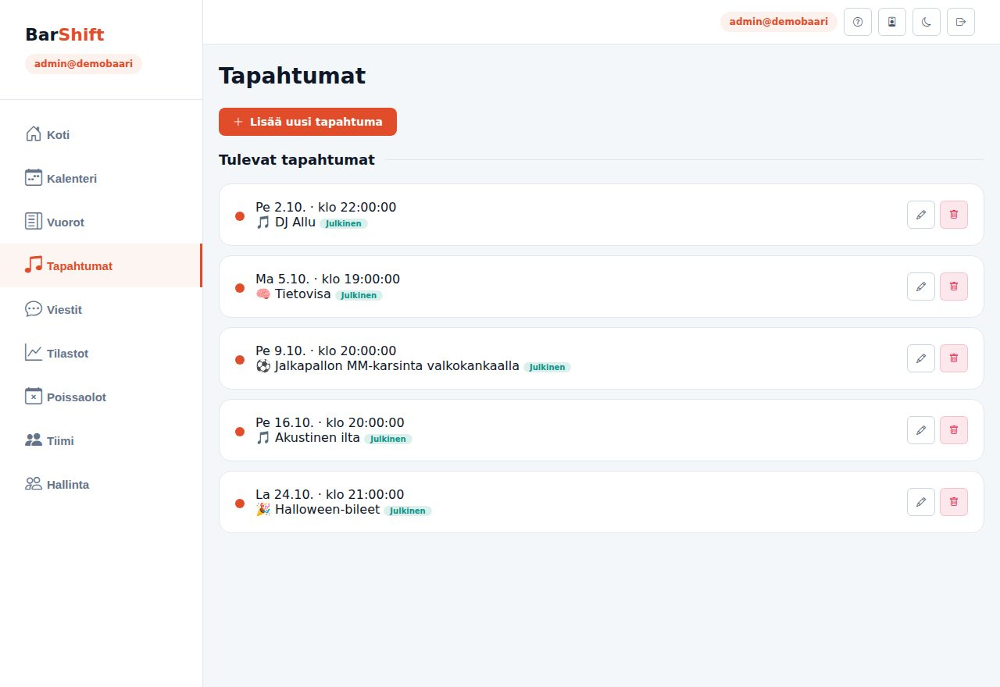
- Valitse kuvake (emoji), kirjoita nimi tai artisti, päivä sekä alkamis- ja päättymisaika.
- Tyyppi: Musiikki, Urheilu, Visa / peli, Teemailta tai Muu (suodatus julkisessa kalenterissa).
- Kuvaus ja mainoskuva (JPG, PNG, WEBP tai GIF, enintään 5 Mt) ovat valinnaisia.
- Näytä julkisessa tapahtumakalenterissa -valinta: vain merkityt tapahtumat julkaistaan (ja vain jos baarin julkinen profiili on julkaistu). Listassa tapahtuma on merkitty Julkinen tai Sisäinen.
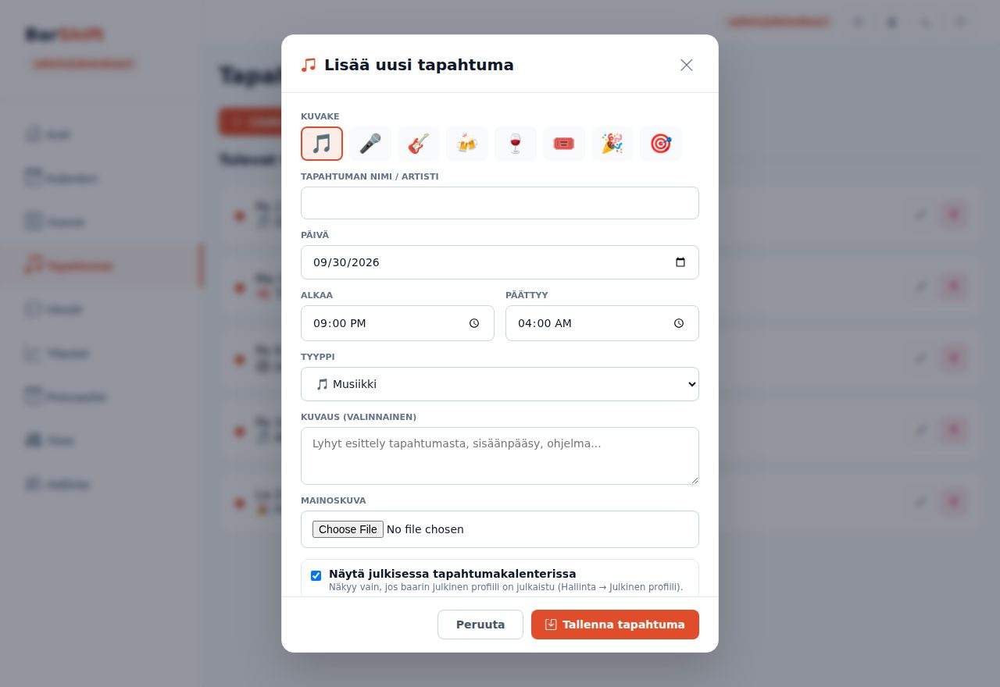
Viestit
- Valitse työkaveri listasta ja kirjoita viesti. Lukemattomista viesteistä näkyy punainen merkki valikossa ja työkaverin kohdalla.
- Viestit näkee vain lähettäjä ja vastaanottaja. Ne tallennetaan salattuna, mutta eivät ole päästä päähän salattuja – älä lähetä niissä salasanoja.
- Uusi viesti lähettää vastaanottajalle push-ilmoituksen, jos hän on sallinut ilmoitukset profiilissaan.
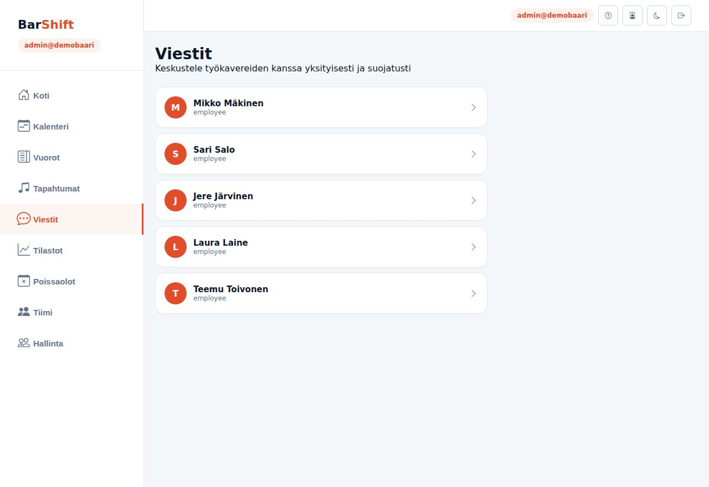
Tilastot
- Työtunnit esitetään kuukausittain avattavina lohkoina
- Jokainen kuukausi näyttää: menneet tunnit, tulevat tunnit ja yhteensä
- Klikkaa kuukausilohkoa avataksesi yksityiskohtaisen taulukon
- Suodata haluamallesi aikavälille (alkaen / päättyen)
- Näkee kaikkien työntekijöiden tunnit samassa näkymässä ja voi suodattaa yksittäisen työntekijän mukaan
- Taulukossa tunnit eriteltynä sekä perjantai-, lauantai- ja sunnuntaivuorojen määrä
- Hyödyllinen palkkojen laskentaan ja työvuorosuunnitteluun
- Raportti ja palkka-ajo: valitse alku- ja loppukuukausi ja paina Näytä: taulukko näyttää kuukausittain työntekijöittäin tunnit (myös ilta-, yö-, la- ja su-tunnit), palkan lisineen ja työnantajakustannuksen (palkka + sivukulut). CSV lataa palkka-ajon Exceliin, Tulosta / PDF tekee tulostettavan raportin (valitse tulostimeksi "Tallenna PDF-tiedostona"). Lisät ja sivukulut asetetaan kohdassa Hallinta → Baari; ne ovat yhteiset koko baarille.
- Tilastot-välilehdet: Myynti (viivagraafi viikko/kk/vuosi, tavoitteet, myynti per työtunti), Tilitykset (päivä- ja viikkotaso, kassaerojen seuranta, kirjanpitovienti), Tunnit (omat tunnit ja kuukausivahvistus), Tuntien hyväksyntä, Raportti ja palkka-ajo ja Työaikapankki. Näet vain ne välilehdet, joihin roolillasi on oikeus.
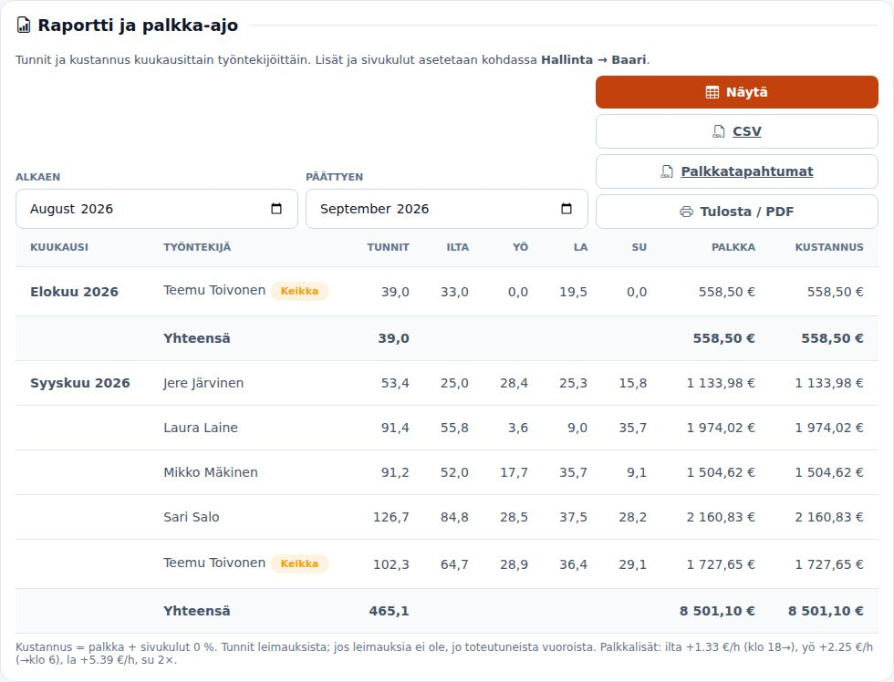
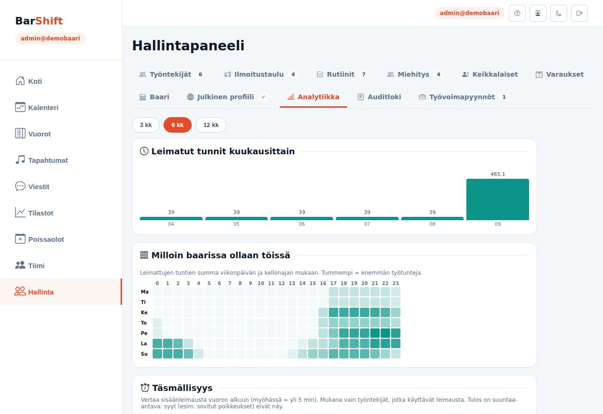
Poissaolot Päivitetty
- Paina Ilmoita uusi poissaolo ja valitse tyyppi: Sairasloma 🤒, Loma ✈️ tai Muu ❓.
- Aseta alkamis- ja päättymispäivä ja kirjoita halutessasi selite. Hakemus menee adminille hyväksyttäväksi.
- Voit muokata omaa hakemustasi vain niin kauan kuin se on tilassa Odottaa käsittelyä. Hylätyn hakemuksen voi poistaa.
- Oman vuosilomasi saldo näkyy sivun yläosassa (ks. Vuosiloma).
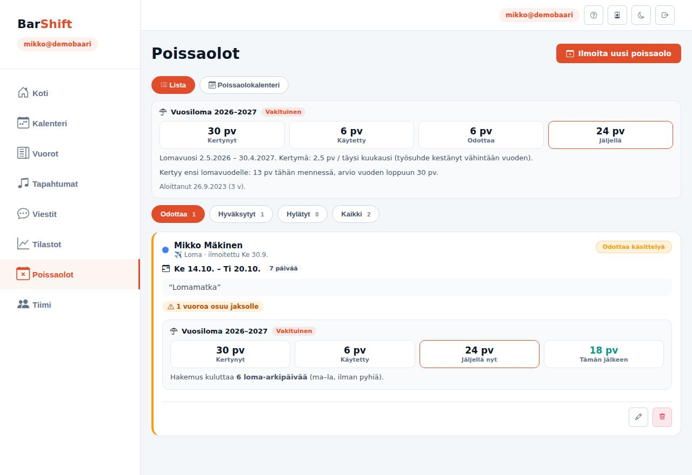
| Tila | Merkitys |
|---|---|
| Odottaa käsittelyä | Admin ei ole vielä päättänyt |
| Hyväksytty | Poissaolo näkyy kalenterissa; loma vähentää vuosilomasaldoa |
| Hylätty | Hakemus on hylätty |
- Sivu avautuu Odottaa-suodattimella, lähin poissaolo ensin. Muut suodattimet: Hyväksytyt, Hylätyt ja Kaikki (lukumäärät näkyvät).
- Kortissa näet työntekijän, tyypin, aikavälin ja päivien määrän, poissaolon syyn sekä huomiot: montako vuoroa osuu jaksolle ja ketkä muut ovat samaan aikaan poissa.
- Muun kuin sairauspoissaolon kortissa näkyy työntekijän vuosilomasaldo ja se, paljonko hakemus kuluttaa lomapäiviä (varoitus, jos saldo ylittyy).
- Paina Hyväksy tai Hylkää. Jos työntekijällä on vuoroja jaksolla, päätösikkuna kysyy, vapautetaanko vuorot avoimiksi vai jätetäänkö ne ennalleen (sairaslomalle oletus on vapauta).
- Hyväksytyn voi perua (Peru hyväksyntä) ja vapautetut vuorot voi palauttaa työntekijälle. Hylätyn voi hyväksyä sittenkin.
- Merkitse poissaolo työntekijälle: valitse "Ilmoita uusi poissaolo" -lomakkeessa työntekijä. Merkintä tallentuu suoraan hyväksyttynä (esim. jo pidetty loma).
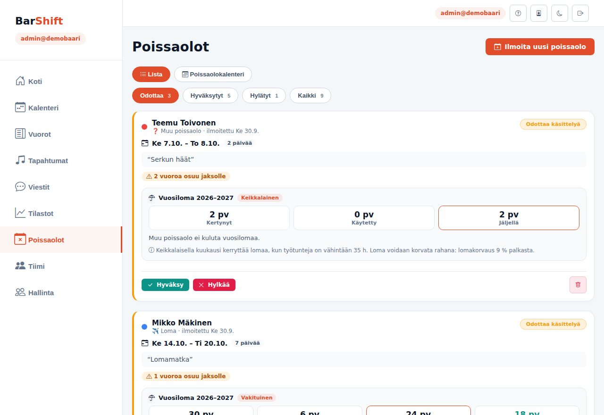
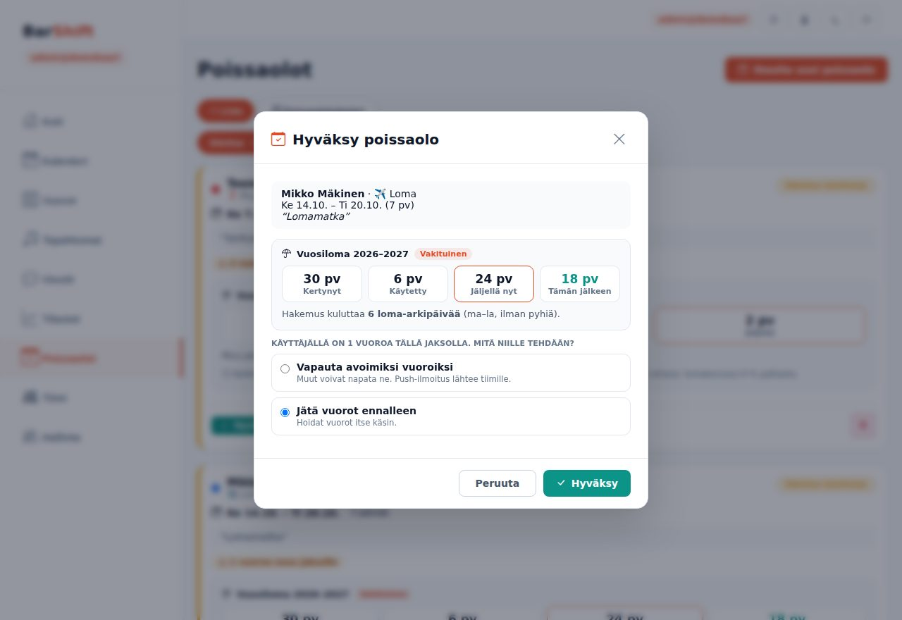
- Välilehti Poissaolokalenteri näyttää kuukausittain, kuka on pois ja milloin (rivit työntekijöitä, sarakkeet päiviä). Selaa kuukausia nuolilla.
- Värit: loma keltainen, sairasloma punainen (vain admin), muu harmaa; raidoitettu = odottaa hyväksyntää.
- Työntekijä näkee kollegoista vain hyväksytyt poissaolot ilman syytä; sairasloma näkyy hänelle vain merkinnällä "Poissa".
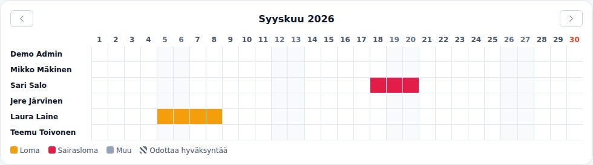
Vuosiloma Uusi
Sovellus laskee vuosiloman kertymän Suomen vuosilomalain mukaan työntekijälle merkityn aloituspäivän ja työsuhteen tyypin perusteella.
| Asia | Sääntö |
|---|---|
| Lomanmääräytymisvuosi | 1.4.–31.3. Siinä kertynyt loma pidetään seuraavana lomavuonna (2.5.–30.4.) |
| Kertymä | 2 pv täydeltä kuukaudelta, jos työsuhde on 31.3. mennessä kestänyt alle vuoden – 2,5 pv, jos vähintään vuoden. Enintään 30 pv/vuosi, murtoluvut pyöristetään ylös. |
| Täysi kuukausi (vakituinen) | Työsuhdetta vähintään 14 päivää kuukauden aikana (eli 17. päivään mennessä alkanut kuukausi on täysi) |
| Täysi kuukausi (keikkalainen) | Työtunteja vähintään 35 h kuukaudessa (leimaukset, muuten toteutuneet vuorot) |
| Lomapäivät | Arkipäivät ma–la; sunnuntait, juhlapäivät, vappu sekä joulu-, juhannus- ja pääsiäisaatto eivät kuluta lomaa |
| Lomakorvaus (keikkalainen) | Loma voidaan korvata rahana: 9 % palkasta (työsuhde alle vuoden) tai 11,5 % (vähintään vuosi) |
- Työntekijälle: Profiili-sivulla ja Poissaolot-sivun yläosassa: kertynyt, käytetty, odottava ja jäljellä oleva loma sekä kertymä seuraavaan lomavuoteen.
- Adminille: Hallinta → Työntekijät -taulukon Loma-sarakkeessa sekä lomahakemuksen kortissa ja hyväksyntäikkunassa.
- Vain Loma-tyyppiset poissaolot kuluttavat vuosilomaa. Sairasloma ja muu poissaolo eivät.
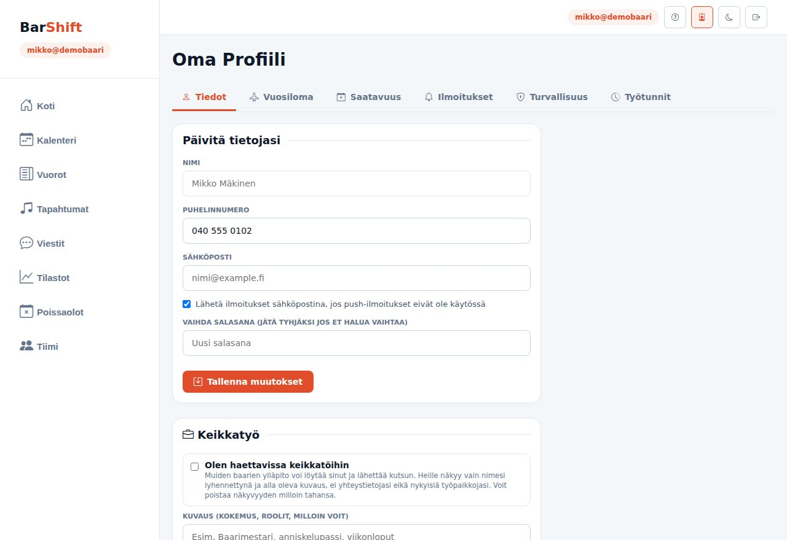
Oma profiili
- Avaa yläreunan Profiili-kuvakkeesta. Sivu on jaettu välilehtiin: Tiedot (puhelin, sähköposti, salasana), Vuosiloma, Ilmoitukset (push ja kalenterisynkronointi), Turvallisuus (kaksivaiheinen tunnistautuminen, tietosuoja ja tietojen lataus) ja Työtunnit (leimaukset). Valittu välilehti muistetaan.
- Päivitä puhelinnumero ja sähköposti ja vaihda salasana (vähintään 8 merkkiä; jätä tyhjäksi, jos et vaihda). Sähköpostia käytetään salasanan palautukseen ja ilmoitusten varakanavana (voit kytkeä sähköposti-ilmoitukset pois ruksista).
- Kirjautumiset ja laitteet: Turvallisuus-välilehdellä näet viimeisimmät kirjautumisesi ja voit kirjata minkä tahansa laitteen (tai kaikki muut) ulos. Salasanan vaihto ja 2FA:n nollaus kirjaavat muut laitteet ulos automaattisesti.
- Asenna sovellus: Android/Chrome: Ilmoitukset-välilehden Asenna sovellus -painike. iPhone: Safarissa Jaa → Lisää Koti-valikkoon, ja salli ilmoitukset asennetusta sovelluksesta. Vuorolista on luettavissa ilman verkkoa, mutta muutokset vaativat yhteyden.
- Kaksivaiheinen tunnistautuminen: paina Ota käyttöön, lisää näytetty avain todennussovellukseen (Google/Microsoft Authenticator, Aegis…) ja kirjoita sovelluksen koodi. Tallenna näytettävät palautuskoodit – ne näytetään vain kerran. Suositeltu ylläpitäjille.
- Saatavuus: merkitse toistuvat estepäivät (esim. maanantait). Työtunnit-välilehdellä näet myös työaikapankkisi (saldo tavoitteeseen nähden ja ylityö).
- Testi-painike lähettää testi-ilmoituksen; jos push ei ole käytössä, ilmoitus tulee sähköpostina.
- Salli ilmoitukset tähän laitteeseen: saat push-ilmoituksen mm. uusista avoimista vuoroista, vuoronvaihtopyynnöistä, poissaolojen päätöksistä ja viesteistä.
- Kalenterisynkronointi: luo oma live-kalenterilinkki ja lisää se puhelimesi tai tietokoneesi kalenteriin. Linkki on henkilökohtainen – älä jaa sitä.
- Leimatut työtunnit: lista omista leimauksista. Voit korjata unohtuneen leimauksen kynäkuvakkeesta.
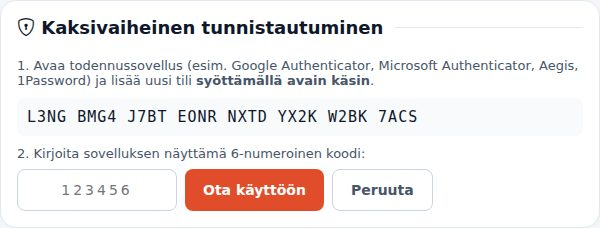
Tiimi Uusi
- Kiitokset: kiitä työkaveria lyhyellä viestillä; kiitokset näkyvät tiimin seinällä ja saaja saa ilmoituksen.
- Dokumentit: ohjeet ja lomakkeet (PDF tai kuva). Ylläpito voi vaatia kuittauksen "luettu" ja näkee, ketkä puuttuvat. Tiedostot aukeavat vain kirjautuneille.
- Perehdytys: ylläpito luo tehtävälistoja (esim. uuden työntekijän perehdytys) ja antaa ne työntekijöille; työntekijä ruksii kohdat, ylläpito seuraa etenemistä.
- Kyselyt: nimettömät kyselyt (arvosana 1–5 ja kommentti). Tulokset näytetään ylläpidolle vasta, kun vastauksia on vähintään 3, eikä vastaajaa tallenneta.
- Etusivun Huomio-kohta muistuttaa kuittaamattomista dokumenteista, keskeneräisistä listoista ja avoimista kyselyistä.
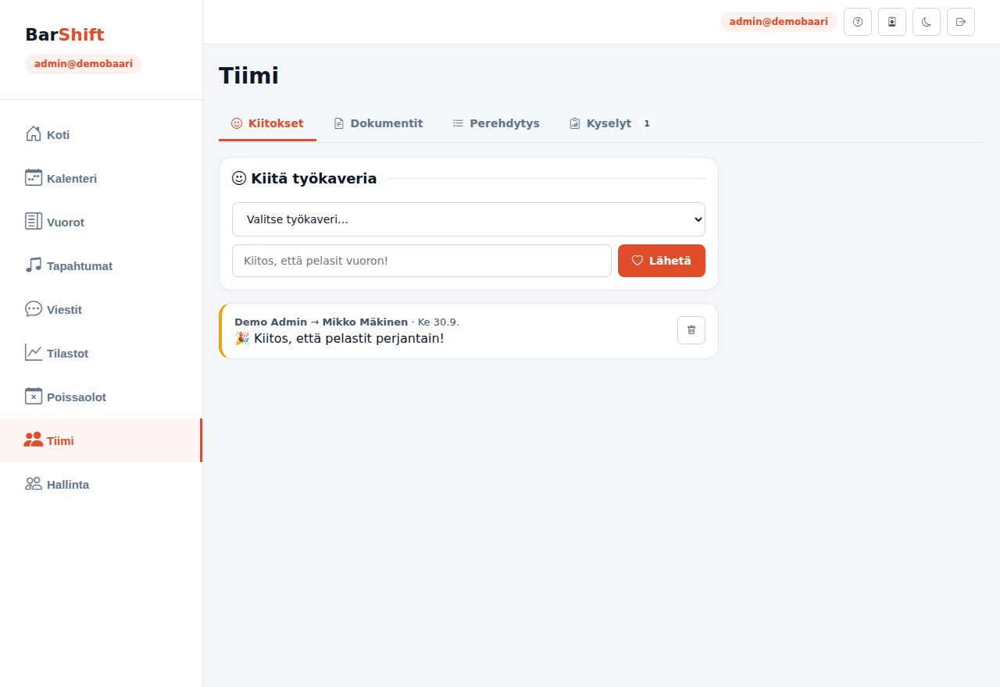
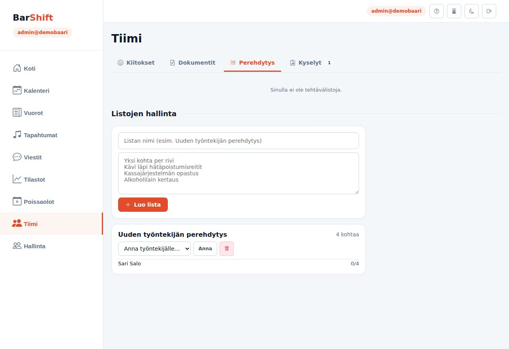
- Kohdassa Oma profiili → Tiedot → Keikkatyö voit ilmoittautua haettavaksi keikkatöihin. Muiden baarien ylläpito näkee vain nimesi lyhennettynä ja kuvauksesi.
- Kun saat kutsun (etusivun Keikkakutsut), voit hyväksyä tai hylätä sen. Hyväksyttäessä sinulle luodaan jäsenyys kutsuneeseen baariin samalla tunnuksella; vaihdat baaria ylälaidan valinnasta.
- Näet oman työhistoriasi (tunnit baareittain) samalla sivulla.
Hallinta (vain admin) Päivitetty
| Välilehti | Sisältö |
|---|---|
| Työntekijät | Työntekijätaulukko, uuden lisäys, muokkaus ja poisto |
| Ilmoitustaulu | Julkaise, muokkaa ja poista uutisia (lähtee myös push-ilmoituksena) |
| Rutiinit | Päivittäiset tehtävät: lisää, muokkaa, järjestä nuolilla, poista |
| Baari | Baarin nimi (kirjautumistunnus ei muutu), aikavyöhyke, vuororoolit, työaikasäännöt, vuoromuistutukset ja leimaushälytykset, palkkalisät, sivukulut, säilytysaika ja laskutustiedot |
| Julkinen profiili | Baarin tiedot julkiseen tapahtumakalenteriin (ks. Julkinen kalenteri) |
| Miehitys | Miehityssäännöt, kattavuus 14 päivälle ja vuoroehdotukset puutteisiin |
| Varaukset | Pöytävaraukset (jos otettu käyttöön) |
| Keikkalaiset | Muiden baarien haettavissa olevat keikkalaiset ja lähetetyt kutsut |
| Analytiikka | Tunnit, kuormituskartta, täsmällisyys, sairauspoissaolot |
| Auditloki | Lista viimeisistä admin-toimista (kuka, mitä, milloin): työntekijöiden muutokset, asetukset, poissaolojen käsittely, palkka-ajon lataus |
| Työvoimapyynnöt | Hätähuuto muille baareille |
Numero välilehden nimen vieressä kertoo kohteiden määrän. Valittu välilehti muistetaan.
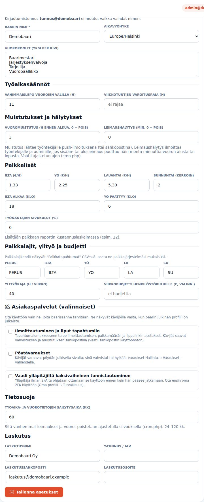
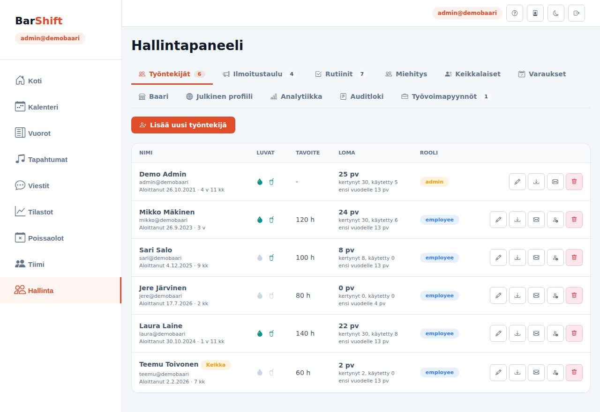
- Paina Lisää uusi työntekijä tai kynäkuvaketta muokataksesi olemassa olevaa.
- Tiedot: nimi, käyttäjätunnus, salasana (muokattaessa tyhjä = ei muuteta), tuntipalkka, tavoitetunnit, rooli (Työntekijä / Admin).
- Aloittanut työssä (aloituspäivä) ja Työsuhteen tyyppi (Vakituinen / Keikkalainen) – tarvitaan vuosiloman laskentaan.
- Luvat: JV-kortin vanhenemispäivä, hygieniapassi ja anniskelupassi. Etusivu varoittaa, kun JV-kortti on vanhenemassa.
- Uusi käyttäjä kirjautuu muodossa
tunnus@baarinnimi. Kerro tunnus ja salasana henkilökohtaisesti. - Salasanan nollaus: muokkaa työntekijää ja kirjoita uusi salasana kenttään.
- Kutsulinkki: uutta työntekijää lisätessä rastita Lähetä kutsulinkki (salasanaa ei tarvita). Linkki lähtee sähköpostilla, jos osoite on annettu; muuten saat linkin jaettavaksi itse. Rivin -painike luo uuden linkin myöhemmin (myös salasanan palautukseen).
- -painike (näkyy, kun työntekijällä on 2FA) nollaa kaksivaiheisen tunnistautumisen, jos puhelin on kadonnut.
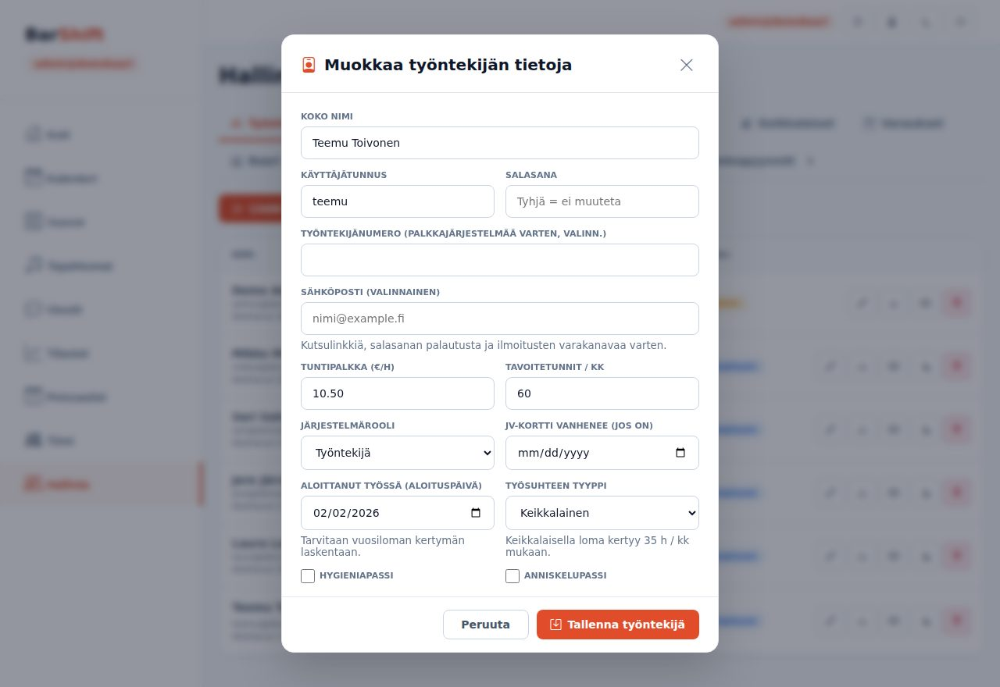
- Ilmoitustaulu: uusin ilmoitus näkyy kaikille etusivulla ja lähtee push-ilmoituksena.
- Rutiinit: lisää päivittäiset tehtävät (esim. "Hanojen pesu"). Järjestä nuolilla; työntekijät kuittaavat ne etusivulla.
- Kassatilitys: valitse rutiinin muokkauksessa "Kassatilitys". Rutiinin kuittaus tehdään syöttämällä päivän loppusumma (valinnaisesti korttimaksut, kassapohja ja laskettu käteinen – ero lasketaan automaattisesti). Työntekijä voi kirjata tai korjata tilityksen 3 päivän ajalta; admin Hallinta → Kassa -välilehdellä mistä tahansa päivästä, sekä CSV-vienti. Loppusumma päivittää myös Tilastot-sivun myyntigraafin (viikko / kuukausi / vuosi edelliseen jaksoon verrattuna). Tilitykseen voi liittää kuvan (esim. kassaraportti). Tilastot → Tilitykset -välilehdellä näet tilitykset ja summat päivä- ja viikkotasolla ja voit selata aiempiin jaksoihin.
- Oikeudet: Hallinta → Oikeudet -välilehdellä määrität, mitä kukin työntekijärooli saa nähdä ja tehdä. Voit luoda rooleja (esim. Vuoropäällikkö), antaa niille ylläpitäjän toimintoja osissa (vuorot, poissaolot, tapahtumat, sisällöt, myynti ja kassa, palkat) tai poistaa perusoikeuksia (kassatilitys, vuoronvaihdot, poissaolohakemukset). Rooli valitaan työntekijän tiedoissa. Ylläpitäjällä on aina kaikki oikeudet.
- Valinnaiset ominaisuudet: Hallinta → Baari → "Muut valinnaiset ominaisuudet": vuorojen haku, automaattinen vuorosuunnitelma, muistutukset vieraille (sähköposti/teksti), verkkomaksu lippuihin ja vieraskortisto. Jokainen baari valitsee itse, mitä käyttää.
- Vieraslista: tapahtuman lomakkeella "Vieraslista: paikkamäärä". Sen jälkeen jokainen työntekijä voi lisätä nimiä tapahtumalle (Tapahtumat-sivun Vieraslista-painike tai kalenterin tapahtuma). Lista näkyy vain baarin henkilökunnalle.
- Osaamiset: Hallinta → Osaaminen. Sido osaaminen vuoron rooliin, niin vuoroon tulee varoitus, jos työntekijältä puuttuu se.
- Tuntien vahvistus: kuun lopussa työntekijä vahvistaa tuntinsa (Tilastot → Tunnit tai etusivun huomio). Ylläpito hyväksyy ne Tilastot → Tuntien hyväksyntä -välilehdellä.
- Haku: Ctrl+K tai yläpalkin suurennuslasi hakee työntekijöitä, vuoroja, tapahtumia, viestejä ja (oikeuksien mukaan) kassaa, varauksia ja vieraita.
- Kieli: yläpalkin kielipainike (FI / EN / SV) tai kirjautumissivun linkit.
- Työvoimapyynnöt: "Uusi hätähuuto muille baareille" lähettää kuvauksen ja yhteystiedon yhteistyöbaarien admineille. Kun heidän adminsa hyväksyy ilmoituksen, se näkyy heidän työntekijöilleen etusivulla. Kuittaa valmiiksi, kun apu on löytynyt.
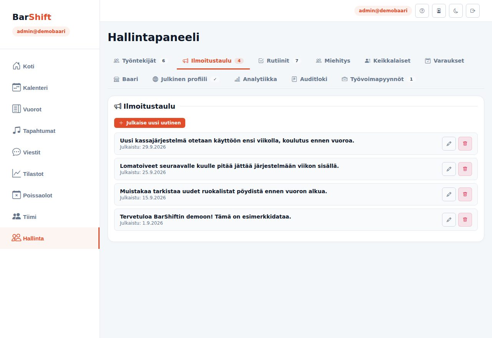
- Tietojen vienti: työntekijärivin -painike lataa kaikki työntekijästä tallennetut tiedot JSON-tiedostona (tarkastusoikeus).
- Anonymisointi: -painike poistaa nimen, tunnuksen, puhelinnumeron, viestit ja saatavuudet ja lukitsee tunnuksen. Vuorot ja työtunnit jäävät nimettöminä (kirjanpito ja työaikalaki). Toimintoa ei voi perua.
- Säilytysaika: Hallinta → Baari → Tietosuoja. Sitä vanhemmat leimaukset, vuorot, poissaolot ja viestit poistetaan ajastetusti (
php cron.php, ks. README). - Tietosuojaseloste:
tietosuoseloste.htmlon linkitetty kirjautumissivulle ja profiiliin. Täydennä sen korostetut kohdat (rekisterinpitäjä, yhteystiedot) ennen käyttöönottoa. - Työntekijä voi itse ladata omat tietonsa: Oma profiili → Lataa omat tietoni.
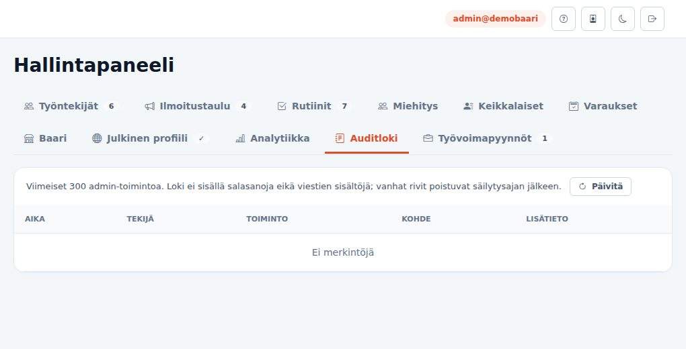
Julkinen tapahtumakalenteri Uusi
Erillinen, kirjautumista vaatimaton sivu tapahtumat.html, joka näyttää usean baarin tapahtumat listana, kuukausikalenterina ja kartalla. Sivu on tarkoitettu asiakkaille. Oletusnäkymä on lista, jossa näkyvät tulevan viikon tapahtumat korteissa.
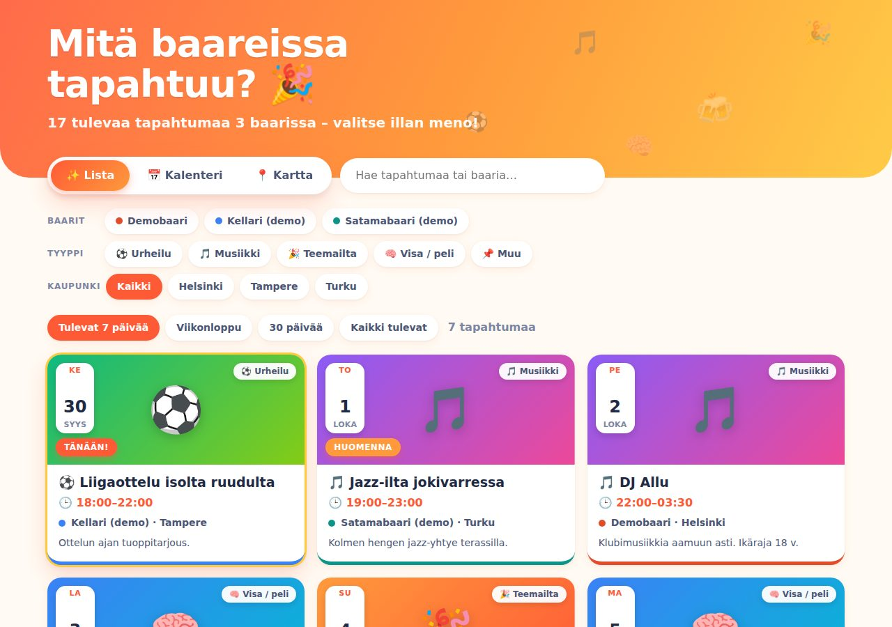
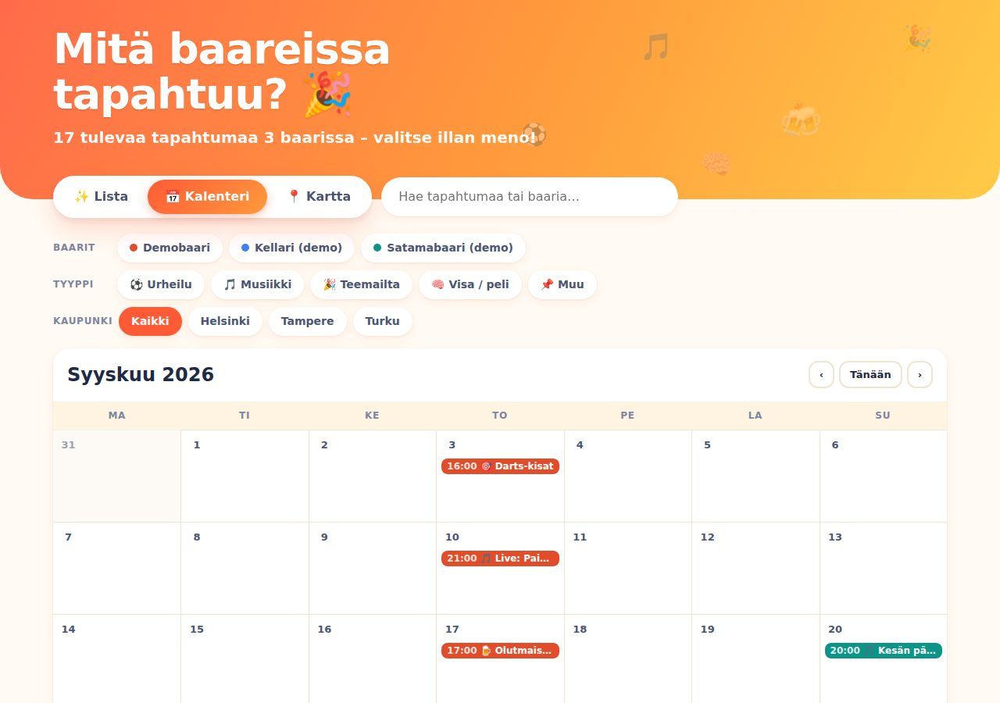
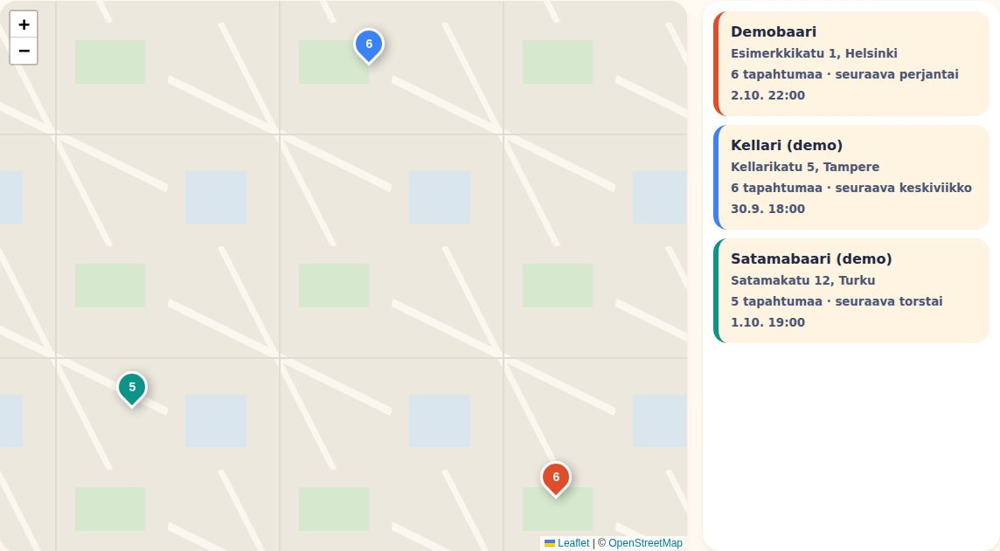
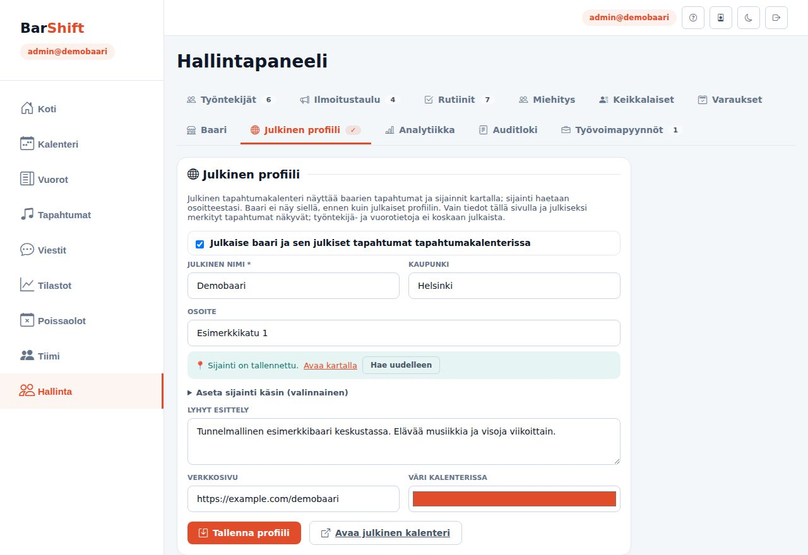
- Baari näkyy vasta, kun itse julkaiset profiilin. Voit perua julkaisun milloin tahansa poistamalla rastin.
- Julkaistaan vain profiilin tiedot ja julkiseksi merkityt tapahtumat (nimi, aika, tyyppi, kuvaus, kuva). Vanhat tapahtumat pysyvät sisäisinä, kunnes merkitset ne julkisiksi.
- Työntekijä-, vuoro- tai palkkatietoja ei koskaan julkaista. Baarin sisäistä tunnusta (kirjautumisessa käytettävä nimi) ei näytetä.
- Vaihda näkymää yläpalkin painikkeista: Lista, Kalenteri tai Kartta. Listassa voit valita aikavälin: tulevat 7 päivää, viikonloppu, 30 päivää tai kaikki tulevat.
- Suodata baarin, tyypin (musiikki, urheilu, visa, teemailta, muu) ja kaupungin mukaan tai hae tekstillä. Puhelimessa suodattimet ovat "Suodattimet"-painikkeen takana.
- Napauta tapahtumaa nähdäksesi tiedot: Lisää kalenteriin (.ics), Kartalla, Reittiohje ja baarin sivut.
- Valitut suodattimet ja näkymä tallentuvat sivun osoitteeseen, joten voit jakaa linkin.
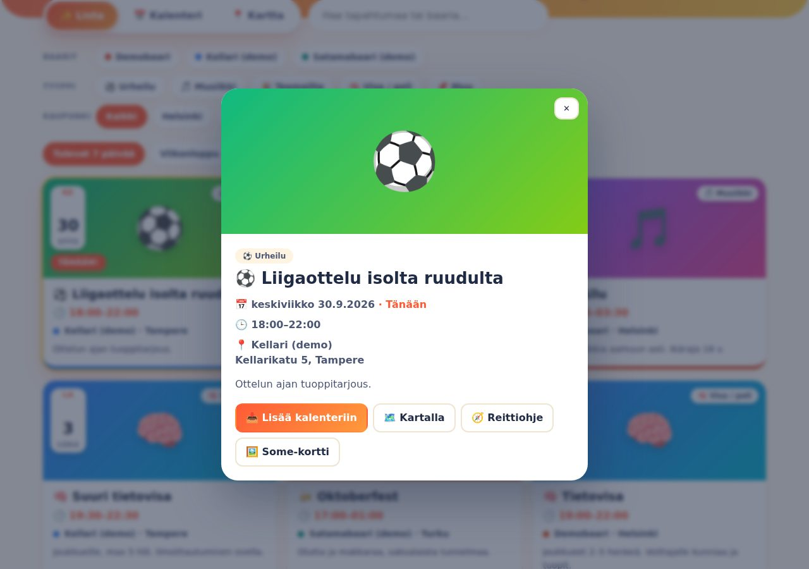
- Kun profiili on julkaistu, Hallinta → Julkinen profiili -sivun alaosassa on Jaa ja upota -kortti.
- iCal-syöte: lisää osoite Google- tai Apple-kalenteriin (tilaus), niin baarin julkiset tapahtumat päivittyvät kalenteriin automaattisesti.
- RSS-syöte: uutislukijoille ja automaatioihin.
- Widget: kopioi upotuskoodi (iframe) baarin omalle verkkosivulle. Osoitteessa voi säätää:
n(tapahtumien määrä),theme=darkjacolor=E14D2A(korostusväri). - Kaikissa näkyy vain julkiseksi merkityt tapahtumat ja julkinen profiili, ei työntekijätietoja.
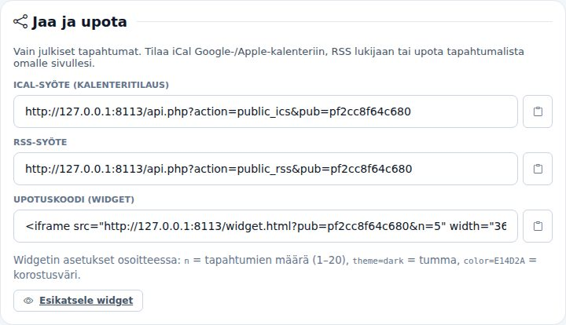
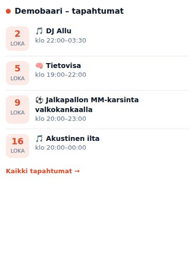
- Molemmat ovat baarikohtaisia ja oletuksena pois: ota käyttöön kohdassa Hallinta → Baari → Asiakaspalvelut. Ne toimivat vain, kun julkinen profiili on julkaistu.
- Ilmoittautuminen / liput: tapahtumalomakkeeseen tulee kohta Ilmoittautuminen ja liput (paikkamäärä, hinta tiedoksi tai ulkoinen https-lippulinkki). Kävijä ilmoittautuu tapahtumakalenterin tapahtumakortista ja saa vahvistuksen, peruutuslinkin ja muistutuksen sähköpostilla. Tapahtumalistassa näkyy ilmoittautuneiden määrä; napauta nähdäksesi nimet, merkitäksesi saapuneet tai ladataksesi CSV:n. BarShift ei käsittele maksuja.
- Pöytävaraukset: aseta aukioloajat, paikkamäärä, suurin ryhmä, varauksen kesto ja vahvistetaanko varaukset automaattisesti. Kävijät varaavat sivulla
varaus.html?pub=…(osoite näkyy Hallinta → Varaukset). Välilehdellä vahvistat tai hylkäät pyynnöt, merkitset asiakkaan paikalle tai poissaolleeksi ja kirjaat puhelinvarauksia. - Julkisessa kalenterissa tapahtumakortista voi ladata myös some-kortin (PNG) jakoa varten.
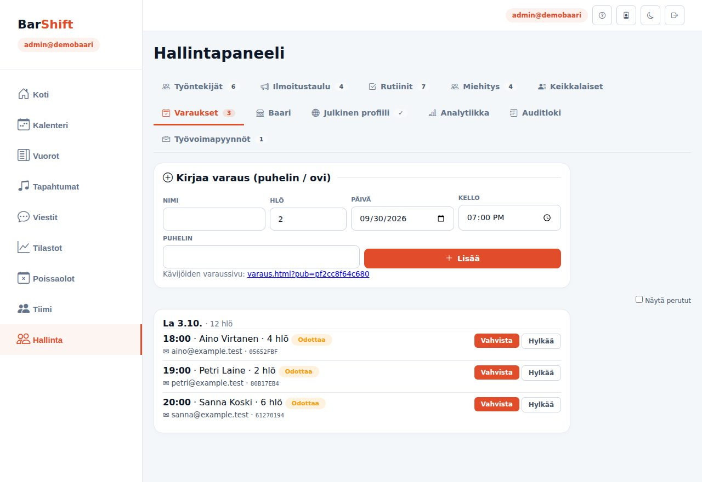
Käytännön esimerkit
Klikkaa tilanteen otsikkoa nähdäksesi vaihe vaiheelta ohjeet.
petra@demobaari